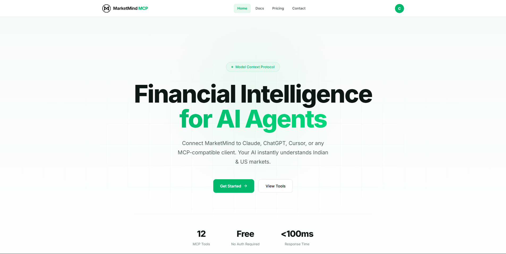

MarketMind — MCP Site
A single Cloudflare Worker playing two roles: an authless Model Context Protocol server your AI agent can connect to, and the static site that teaches you how. Twelve market tools, one-line configs for Claude, ChatGPT, Cursor, and mcp-remote — with a docs page carrying the real quota numbers.

Overview
mcp.marketmind-hub.in isn't a typical marketing page. It's the public face of a server: a Cloudflare Worker that exposes MarketMind's market intelligence over the Model Context Protocol for free, with no API key required, and co-serves an onboarding site that explains what MCP is, catalogs the 12 tools, and drops a copy-paste config into your client in about 30 seconds.
It's the bridge between the marketing site ("there's an MCP") and the developer portal ("here's where you pay for capacity") — the part of the funnel that has to make a skeptic actually connect a tool.
One worker, two jobs
wrangler.jsoncdeclares a Worker namedmcp, routed to the custom domainmcp.marketmind-hub.in, with its entry point atsrc/index.ts.- Dispatch order in the Worker's fetch handler: the
/mcppath goes to the MCP server (McpAgent.serve("/mcp")); everything else falls through toenv.ASSETS.fetch(), which serves the staticpublic/site with auto-trailing-slash and 404-page handling. - Debate-ready tools and onboarding copy deploy under one domain with one
wrangler deploy— protocol and product can't drift apart.
The MCP server
- Built on Cloudflare's
agentsframework — anMcpAgentnamed MarketMind MCP v0.2.0 served over streamable-http, with zod validating every tool call. - Authless by design: no auth middleware anywhere on the
/mcppath. Generous free tool access is the growth hook; the paid quota story lives on the developer portal where capacity actually gets metered and billed. - Stateful sessions: each connection maps to a Durable Object (SQLite-backed) holding the
McpAgentinstance, so multi-turn conversations keep their tool-call state across requests. - Edge data: a KV namespace caches derived datasets (e.g. the ticker dataset with a 6-hour TTL), an R2 bucket (
marketmind-data) is the durable source of truth, and two env vars point at the internal ticker-extractor gateway and the RAG service — with a single secret authorizing those internal proxy calls.
The 12 tools
The catalog is split into three families — exactly the mental model the site's filter tabs invite you to use:
- Computation (8):
market_time,market_status,market_next_session,market_is_holiday,market_upcoming_holidays,market_settlement_date,market_expiry,market_lot_size— deterministic IST-calendar logic built directly into the worker (weekend check, holiday arrays, T+1 skipping, weekly/monthly expiry math). - Data (2):
market_ticker_metaandmarket_sector_tickers— read the NSE/BSE dataset from R2 through KV via cache-aside helpers, with case-insensitive sector matching. - Intelligence (2):
market_ticker_extractproxies to the fine-tuned Mistral-7B gateway using the internal token, andmarket_rag_queryproxies to the RAG service for token-budgeted, source-annotated financial context. - One contract: every tool answers with a
{type:"text", text: JSON.stringify(obj, null, 2)}payload — structured data for agents, not prose.
The static site
- Multi-page, not a SPA:
index,docs,pricing,contact,legal,404, an OAuth callback page, and adashboard. - Landing: hero stats (12 tools · free · no auth · <100ms), a "what is MCP" primer, a 12-tool catalog with working category filter tabs (All / Computation / Data / Intelligence), quick-start cards, a try-it section that maps natural-language questions to the answering tool, and a contact CTA.
- Docs: the full MCP reference with a desktop sidebar scroll-spy and a mobile search/jump dropdown; the plan credit limits on it are real plan data (Sandbox 100/day, Starter 500/day, …).
- Shared chrome: header, footer, and the login/signup/checkout/enterprise modals are partials injected via fetch — and they're genuinely wired to the backend (login/signup hit the portal API, checkout runs a real Razorpay flow). Even on an authless product site, the account story is one click away.
- Brand parity: light theme with the same green accent (
#00b86c) as the main site, so the two "light" sites read as one brand versus the developers portal's dark console.
Quick-start funnel
The conversion mechanic is admirably direct: show the exact config file each client wants, already filled in.
claude_desktop_config.json→ Claude Desktopmcp_config.json→ ChatGPT.cursor/mcp.json→ Cursornpx mcp-remote→ local/CLI setups
All four point at https://mcp.marketmind-hub.in/mcp with transport: "streamable-http" and — because the server is authless — no key in the config. The blocks are styled as macOS code windows; honest note: the shipped snippets are visual, not click-to-copy, and the landing tabs are a plain client-side filter. Both are deliberate simplicity, not magic.
Deployment & reliability
wrangler deployhandles the whole thing — edge routing, TLS on the branded domain, static asset caching, and the Worker's 404-page fallback.- Observation on: the project enables Observability and uploads source maps, and runs Node compatibility, so runtime failures point back at readable TypeScript.
- Data reads go through KV cache-aside on top of R2 — the dataset on disk is durable, the hot reads are cheap, and the 12 tools return fast enough that the site can headline "<100ms".